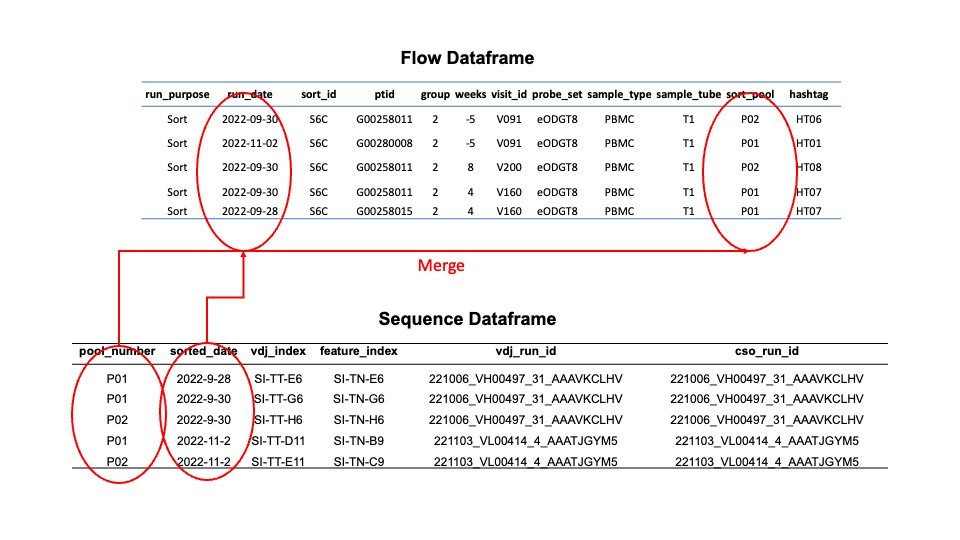

Validation
Validation¶
The most important part of this clinical trial, other than its working, is that everything is validated. That means that the data is validated, the code is validated, and the results are validated. This is a crucial part of the process and should not be skipped.
FACS/Sorting¶
These are instructions on validating the file structure containing the FACS/Sorting data before uploading to Box.
#Run the validator for flow from the command line
$ g00x g002 validate flow my_path/to/box/G002/
If you got your data from AWS, your command line would look like the following
#Run the validator for flow given the AWS structure
$ g00x g002 validate g002/G002/sorting/G002
from g00x.flow.flow import parse_flow_data
from g00x.data import Data
# data
data = Data()
# parse flow data into a dataframe
validated_structure = parse_flow_data(data,"g002/G002/sorting/G002") # this returns a dataframe
File structure¶
Your folder structure on Box should look like this.
# If you used the above commands to sync the data. The folder structure will look like this
g002/G002/sorting
└── G002
├── Prescreens
│ ├── Prescreen_RunDate220825_UploadDate221021
│ ├── Prescreen_RunDate220826_UploadDate221021
....
└── Sorts
├── Sort_RunDate220927_UploadDate221013
├── Sort_RunDate220928_UploadDate221014
├── Sort_RunDate220929_UploadDate221014
├── Sort_RunDate220930_UploadDate221014
...
Full file structure¶
Download full architecture via Madhu Prabhakaran
Sequencing files¶
To validate the sequencing files, they must be merged with the flow data. Thus, you will need both sequencing and flow files. This is because most of the metadata is housed in the flow files.
The folder for sequencing should look like the following.
G002
├── run0002
│ ├── 221006_VH00497_31_AAAVKCLHV
│ └── sample_manifest.csv
├── run0003
│ ├── 221019_VH00497_32_AAANGGVM5
│ └── sample_manifest.csv
└── run0004
├── 221101_VL00414_3_AACFYLCM5
├── 221103_VL00414_4_AAATJGYM5
└── sample_manifest.csv
where a sample_manifest.csv looks like the following.
| pool_number | sorted_date | vdj_sequencing_replicate | cso_sequencing_replicate | vdj_lirary_replicate | cso_library_replicate | bio_replicate | vdj_index | feature_index | vdj_run_id | cso_run_id | |
|---|---|---|---|---|---|---|---|---|---|---|---|
| 0 | 1 | 220927 | 0 | 0 | 0 | 0 | 0 | SI-TT-D6 | SI-TN-D6 | 221006_VH00497_31_AAAVKCLHV | 221006_VH00497_31_AAAVKCLHV |
| 1 | 1 | 220928 | 0 | 0 | 0 | 0 | 0 | SI-TT-E6 | SI-TN-E6 | 221006_VH00497_31_AAAVKCLHV | 221006_VH00497_31_AAAVKCLHV |
| 2 | 1 | 220929 | 0 | 0 | 0 | 0 | 0 | SI-TT-F6 | SI-TN-F6 | 221006_VH00497_31_AAAVKCLHV | 221006_VH00497_31_AAAVKCLHV |
| 3 | 1 | 220930 | 0 | 0 | 0 | 0 | 0 | SI-TT-G6 | SI-TN-G6 | 221006_VH00497_31_AAAVKCLHV | 221006_VH00497_31_AAAVKCLHV |
| 4 | 2 | 220930 | 0 | 0 | 0 | 0 | 0 | SI-TT-H6 | SI-TN-H6 | 221006_VH00497_31_AAAVKCLHV | 221006_VH00497_31_AAAVKCLHV |
To run the merge use the following.
$ g00x g002 validate merge -f /path/to/flow -s /path/to/sequencing -o merge.csv
---> 100%
You can use the following command to merge the files if you have the AWS Structure.
$ g00x g002 validate merge -s ./g002/G002/sequencing/G002 -f ./g002/G002/sorting/G002 -o merge.csv
---> 100%
from g00x.sequencing.merge import merge_flow_and_sequencing
from g00x.data import Data
out = 'merge.csv'
data = Data()
df = merge_flow_and_sequencing(data,"path/to/flow", "path/to/sequencing")
df.to_csv(out)
The merged file will use the sort pool and sorting date as the fields to join together the sequencing and flow data.

Merged Fields¶
Below are all the fields available in the merged file. You may view the merged file through the api my_file = merge_flow_and_sequencing(data,"path/to/flow", "path/to/sequencing") and then my_file.data to view the data.
| Column | Definition |
|---|---|
| ptid | The participant id, e.g. G002XXXX |
| group | The trial group, 1-4 |
| weeks | The number of weeks post-vaccine |
| visit_id | The visit id which corresponds to a weeks post vaccine |
| probe_set | Which probe was the sample sorted with, eOD or Core |
| sample_type | PBMC or GC |
| run_date | :material-merge: The date of the sort |
| sort_pool | :material-merge: Which pool was the sample put into |
| hashtag | The hashtag oligo which will be used to demultiplex |
| run_dir_path | Where the sequencing data path is located |
| pool_number | :material-merge: The pool number is the same as the sort pool |
| sorted_date | :material-merge: The date of the sort |
| vdj_sequencing_replicate | How many times has the sample been sequenced for VDJ, index starts at zero |
| cso_sequencing_replicate | How many times has the sample been sequenced for the feature library |
| vdj_lirary_replicate | How many times has the same library been prepared for the VDJ |
| cso_library_replicate | How many times has the same library been prepared for the feature |
| bio_replicate | :material-bio: A biological replicate (brand new samples) |
| vdj_index | The Illumina index to demultiplex the VDJ library |
| feature_index | The Illumina index to demultiplex the feature library |
| vdj_run_id | The Illumina assigned run id for the VDJ library |
| cso_run_id | The Illumina assigned run id for the feature library |
An example of five entries for the merged file is below.
| ptid | group | weeks | visit_id | probe_set | sample_type | run_date | sort_pool | hashtag | run_dir_path | pool_number | sorted_date | vdj_sequencing_replicate | cso_sequencing_replicate | vdj_lirary_replicate | cso_library_replicate | bio_replicate | vdj_index | feature_index | vdj_run_id | cso_run_id | |
|---|---|---|---|---|---|---|---|---|---|---|---|---|---|---|---|---|---|---|---|---|---|
| 0 | G002516 | 1 | -5 | V091 | eODGT8 | PBMC | 2022-09-27 | P01 | HT01 | /mnt/fsx/workspace/jwillis/repos/G00x/g002/G002/sequencing/G002/run0002 | P01 | 2022-09-27 | 0 | 0 | 0 | 0 | 0 | SI-TT-D6 | SI-TN-D6 | 221006_VH00497_31_AAAVKCLHV | 221006_VH00497_31_AAAVKCLHV |
| 1 | G002516 | 1 | 4 | V160 | eODGT8 | PBMC | 2022-09-27 | P01 | HT02 | /mnt/fsx/workspace/jwillis/repos/G00x/g002/G002/sequencing/G002/run0002 | P01 | 2022-09-27 | 0 | 0 | 0 | 0 | 0 | SI-TT-D6 | SI-TN-D6 | 221006_VH00497_31_AAAVKCLHV | 221006_VH00497_31_AAAVKCLHV |
| 2 | G002516 | 1 | 8 | V200 | eODGT8 | PBMC | 2022-09-27 | P01 | HT03 | /mnt/fsx/workspace/jwillis/repos/G00x/g002/G002/sequencing/G002/run0002 | P01 | 2022-09-27 | 0 | 0 | 0 | 0 | 0 | SI-TT-D6 | SI-TN-D6 | 221006_VH00497_31_AAAVKCLHV | 221006_VH00497_31_AAAVKCLHV |
| 3 | G002855 | 2 | -5 | V091 | eODGT8 | PBMC | 2022-09-28 | P01 | HT06 | /mnt/fsx/workspace/jwillis/repos/G00x/g002/G002/sequencing/G002/run0002 | P01 | 2022-09-28 | 0 | 0 | 0 | 0 | 0 | SI-TT-E6 | SI-TN-E6 | 221006_VH00497_31_AAAVKCLHV | 221006_VH00497_31_AAAVKCLHV |
| 4 | G002855 | 2 | 4 | V160 | eODGT8 | PBMC | 2022-09-28 | P01 | HT07 | /mnt/fsx/workspace/jwillis/repos/G00x/g002/G002/sequencing/G002/run0002 | P01 | 2022-09-28 | 0 | 0 | 0 | 0 | 0 | SI-TT-E6 | SI-TN-E6 | 221006_VH00497_31_AAAVKCLHV | 221006_VH00497_31_AAAVKCLHV |
A downloadable merge file can be found here